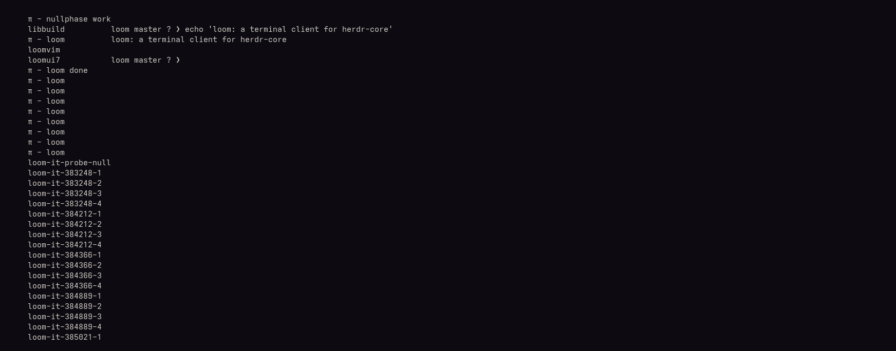

Close the window and your agents keep working. loom attaches to a local
herdr-core (hc) server, renders its terminals as panes in a
bloom TUI, forwards keys and mouse, resizes with the layout, and comes back
to the same screen when you reattach. The core owns the processes; loom owns the pixels.

01–08 attach · typing through loom into the shell · live tail ·
scrollback (↑ indicator) · return to live · loom killed, program survives ·
reattach shows the same screen. Frames captured from a real session via hc read.
Protocol SDK: socket, plain→framed handshake, JSON-RPC, events with seq/missed resync, attach streams with credit, double-negotiated auto-input.
pure Go · zero cgoOwns a libghostty-vt emulator per terminal: bytes in, immutable Screen out. Scroll ops, key/mouse encoders, real cell pixels, size-report effects.
go.mitchellh.com/libghostty · pinned b13f277bloom tree, sidebar with OSC 7501 agent badges, geometry-driven RESIZE, scroll indicator overlay. A 21-line adapter is the only place the contracts meet.
bloomfx.dev/bloom · bubbletea v2LOOM_ATTACHmake verify) against a real core| leg | before | after | note |
|---|---|---|---|
| dense assembly (200×60) | 2.55 ms | 0.47 ms | 92,428→2 allocs; hillclimb, 3 kept of 5 |
| typical styled frame, end to end | — | ≈1.1 ms | 13% of the 8.33 ms budget at 120 fps |
| pane publish per changed frame | — | 0.40 ms | VTWrite + RenderState + Screen build |
| idle pane | — | 1.45 ns | zero allocs; bloom unchanged-frame path |
make deps fetches ghostty at the pinned commit and builds
libghostty-vt via zig, then make verify runs the race suite plus the
live gates. One command, reproducible, no sibling checkouts.